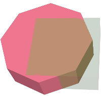
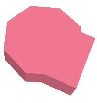

名前
ST_3DUnion — 3次元の結合を計算します。
概要
geometry ST_3DUnion(geometry geom1, geometry geom2);
説明
Availability: 2.2.0
 This method needs SFCGAL backend.
This method needs SFCGAL backend.
This function supports 3d and will not drop the z-index.
This function supports Polyhedral surfaces.
This function supports Triangles and Triangulated Irregular Network Surfaces (TIN).
例
PostGIS関数ST_AsX3Dを使って3次元イメージを生成し、X3Dom HTML Javascript redering libraryを使ってHTMLでの描画を行います。
SELECT ST_Extrude(ST_Buffer(ST_GeomFromText('POINT(100 90)'),
50, 'quad_segs=2'),0,0,30) AS geom1,
ST_Extrude(ST_Buffer(ST_GeomFromText('POINT(80 80)'),
50, 'quad_segs=1'),0,0,30) AS geom2;
 元の3次元ジオメトリを重ねたもの。geom2は半透明で示しています。 |
SELECT ST_3DUnion(geom1,geom2)
FROM ( SELECT ST_Extrude(ST_Buffer(ST_GeomFromText('POINT(100 90)'),
50, 'quad_segs=2'),0,0,30) AS geom1,
ST_Extrude(ST_Buffer(ST_GeomFromText('POINT(80 80)'),
50, 'quad_segs=1'),0,0,30) AS geom2 ) As t;
 geom1とgeom2の結合 |